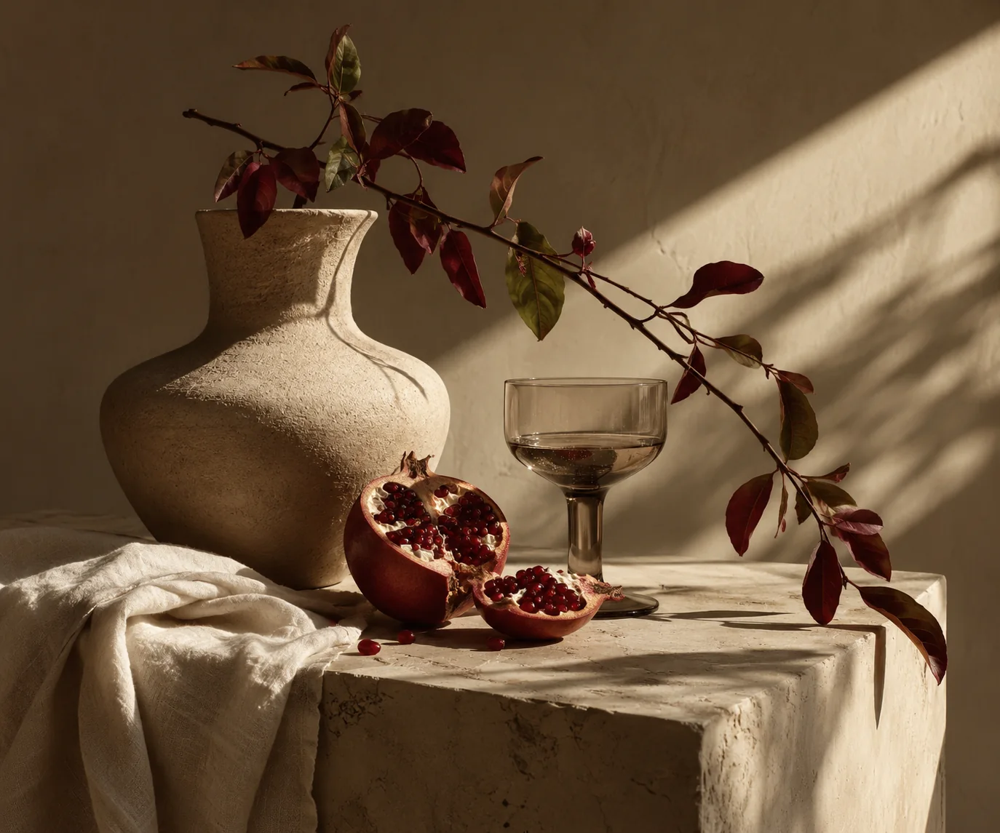

RESPONSIVE EMAIL / PORTFOLIO SPECIMEN
Fictional studio announcement; not a sent newsletter, subscription flow or email-client certification.
PLAIN SIGHTSTUDIES / 01—03

A NOTE ABOUT SEEING
The ordinary,
observed differently.
Introducing three editorial studies of people, objects and spaces—an invitation to look again at things we almost overlooked.
Explore the collection ↗PLAIN SIGHT / SELF-INITIATED DESIGN CONCEPT · NO MESSAGES WERE SENT